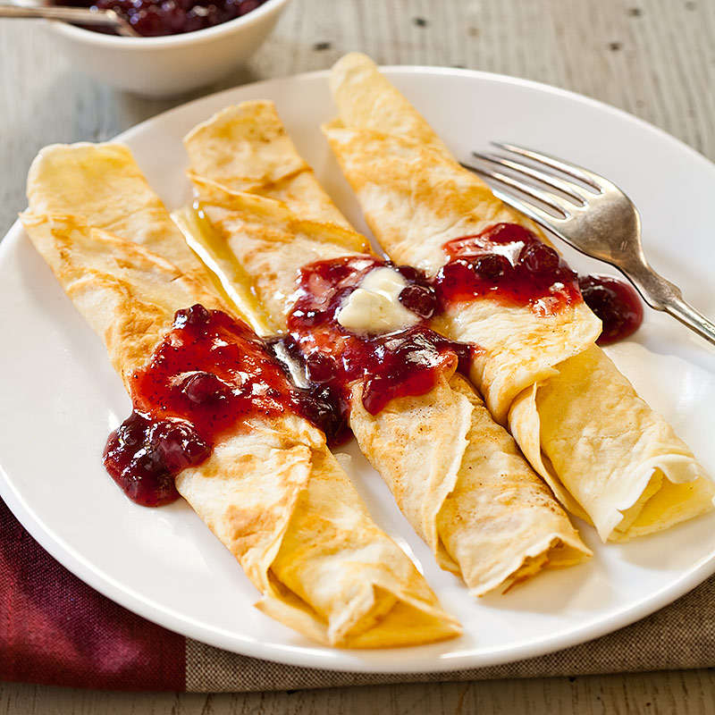

Pancakes

This is Swedish style pancakes filled with sugar and jam ontop
These pancakes are easy to make and very thin but yet filling!
Ingredients
- Flower
- Milk
- Eggs
- Butter
- Salt
Steps
- Add flower, milk and egg in a bowl and whisk it together to a fine smooth consistency
- Add some salt and melted butter into the bowl
- Heat a frying pan on low heat and add some butter
- Add roughly 1/2 cup of the bowl into the pan
- After approximately 2 min flip the pancake and finish it off for another minute
- Fill the pancake with sugar, ice cream, jam, nutella or whatever else you please and roll the pancake up
- Enjoy!